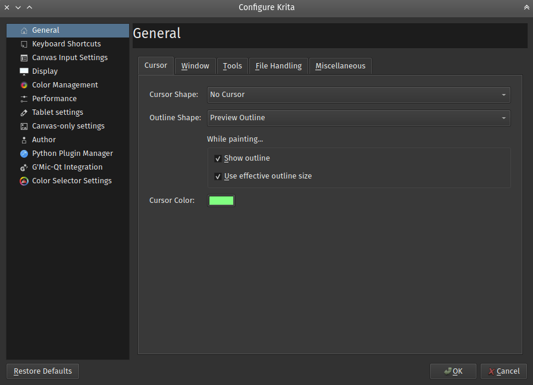

「一般」設定¶
Krita 的一般設定中包含了游標、視窗、工具、檔案和一些重要的選項。您可以通過 進入設定。

游標設定¶
您可以在這裡自訂繪圖游標：
游標形狀¶
選擇於使用筆刷工具時顯示的游標形狀，當游標移動到畫布視圖上就會以所選樣式一直顯示在筆尖位置，可用的游標形狀如下所示。
- 工具圖示
顯示當前工具圖示，在使用筆刷工具時也顯示筆刷圖示。

- 箭頭
顯示一般箭頭游標。

- 十字線
顯示準星狀十字線。

- 小圓圈
顯示一個白底黑線小圓圈。

- 沒有游標
不顯示游標，可用於平板電腦。

- 三角形（慣用右手）。
顯示一個白底黑邊箭頭，箭頭朝右手使用者習慣的方向。

- 三角形（慣用左手）。
與上面相同，但箭頭朝左手使用者習慣的方向。

- 黑色像素
僅顯示一個黑色像素。

- 白色像素
僅顯示一個白色像素。

輪廓形狀¶
選取筆刷工具使用時要顯示的輪廓形狀。您可選擇是否在繪圖時持續顯示輪廓，可用的輪廓形狀如下所示。（目前無說明圖片）
- 不顯示輪廓
不顯示筆刷輪廓。
- 圓形輪廓
顯示大約符合筆刷尺寸的圓形輪廓。
- 預覽輪廓
根據筆刷實際的形狀顯示輪廓。
- 傾斜度輪廓
顯示帶有筆刷傾斜度指示的圓形輪廓。
繪圖的時候…¶
- 顯示輪廓
勾選這個項目時，在筆刷進行繪圖當中會持續顯示輪廓；而不勾選這個項目的狀況下，繪圖進行中不會顯示輪廓，僅在下筆之前和筆刷完成繪圖後才會顯示輪廓。這個選項只有在啟用「筆刷輪廓」時才有作用。
在 4.1 版本變更: 曾經被稱為「繪畫時顯示輪廓」。
- 使用有效的輪廓大小
在 4.1 版本新加入: 勾選這個功能時，筆刷輪廓的大小會按照數位板感壓筆壓力大小相應變化。在不勾選的狀況下，筆刷輪廓會保持它的大小以減少干擾。
- 游標顏色：
預設的游標顏色，這顏色會在畫布上以對比色顯示，儘可能做到在各種顏色下游標依然清晰可辨。但有時在某些顏色下無法看清，這可能是顯示器驅動程式造成的問題，這時您可換用另一個顏色來試試看效果是否有改善。
視窗設定¶
- 多檔案模式
這裡可依喜好設定為類似 GIMP 或 Paint Tool SAI 那樣將每個開啟的檔案在畫布視圖上以「分頁」方式呈現；也可設定為 PhotoShop 那樣將每個開啟的檔案以「子視窗」呈現。
- 背景影像
這功能可讓您選取並自訂子視窗模式的背景影像，若不想再使用背景影像時可按「清除」移除。
- 視窗背景色彩
自訂子視窗模式下畫布區域的色彩。
- 自訂使用者介面字型
在 4.4.2 版本新加入: 這裡可自訂使用者介面字型與字體大小。變更之後需要重新啟動 Krita。
- 移動子視窗時不顯示內容
移動子視窗時只顯示輪廓。在比較差的顯卡驅動程式下可試著使用這項目以改善顯示。
- 在畫布上顯示浮動訊息
選擇是否在畫布上浮動顯示當前您使用的是何種功能選項模式、旋轉畫布或鏡像。
- 啟用高解析度螢幕（Hi-DPI ）支援
嘗試使用 Hi-DPI 支援。這只是個選項，因為在 Windows 系統上此功能尚未成熟依然有介面顯示過大的錯誤發生。
- 啟用非整數比例縮放（Hi-DPI）
在 5.0 版本新加入: 允許在高解析支援模式下使用非整數倍數（不是 100% 的整數倍數）顯示縮放。若您的系統使用了非整數倍數縮放，這個選項可讓 Krita 的介面與系統互相配合，但可能因此造成一些顯示時不自然的問題。
- 只允許一個 Krita 實例執行
實例是系統任務管理員中的單個處理程序。打開此選項可確保在點開 Krita 格式檔案時，先檢查是否有 Krita 處理程序已經打開，若有的話就使用這個實例來打開檔案。在某些比較少見的工作流程可能會需要使用多個 Krita 實例，但若您不知可以做何種用途的話請將這個項目勾選即可。
在 5.0 版本開始棄用: 從 Krita 5.0 開始，這個功能已廢棄不用。因為新版 Krita 改用了 SQLite 資料庫來管理資源，而且工作上也無法再支援多個實例。
工具設定¶
工具選項位置¶
- 在工具面版中（預設）
工具選項會顯示在一個單獨的面版中，這是預設。
- 在工具列內
使用此選項的話，工具選項會顯示在工具列上，點一下即可顯示，也可用 \ 快捷鍵叫出。
- 筆刷流量模式
Krita 4.2 版改變了筆刷在使用流量和不透明度的演算法，這選項允許您切換到舊版模式，但這最後也將會在未來的版本中移除。
- 在使用選取區域工具時交換 Ctrl 與 Alt 組合鍵的作用
選用這個功能後，會交換 Ctrl 和 Alt 鍵在修改選取區域時的組合鍵。此功能是專為習慣 Gimp 而不是 PhotoShop 組合鍵的人，或鍵盤右邊沒有 Alt 鍵的左撇子畫家而準備的。
- 啟用以手指在觸控螢幕上繪畫
這功能啟用後，可用手指在電容觸控螢幕上繪圖。有些螢幕同時擁有電容觸控與繪數位板功能，這可能會干擾感壓筆的繪圖輸入，此時請關閉這個功能。
在 5.0 版本變更: 停用此選項後可使用單指手勢來平移畫布；啟用後則需用三指手勢才能平移畫布。
- 在貼上後自動切換到變形工具
在 4.2 版本新加入: 這是個方便的功能，在啟用此選項的狀態下，貼上之後會自動切換到變形工具以快速移動或旋轉。
- 啟用觸控螢幕旋轉手勢
不勾選此功能時，觸控手勢只能縮放與平移畫布視圖。勾選這項目後，兩指手勢還能執行旋轉畫布視圖。
- 拖曳捲動（需要重啟程式）
在所有可捲動面板啟用「拖曳捲動」的功能，預設是使用按下滑鼠中鍵的方式拖動，效果類似在觸控螢幕以指尖滑動。

在啟用點擊並拖曳捲動的狀態時，只要按住滑鼠左鍵不放，面板上的游標即變成拖動圖示，不會因此誤選列表中的內容。¶
- 拖動方式
選擇拖曳捲動啟用的方式。
- 按住中間鍵拖曳捲動
在可捲動面板上按住滑鼠中鍵（或滾輪）不放時啟用拖曳捲動。
- 以觸控螢幕拖曳捲動
在觸控螢幕中於可捲動面板偵測到動作時啟用，但這個選項並非總是能夠正常工作。
- 點擊並拖曳捲動
在可捲動面板上按住滑鼠左鍵時拖曳捲動，這個選項一定可以正常操作。
- 靈敏度
此設定影響拖曳被啟動的速度以及拖曳的有效距離。
- 啟用拖曳捲動時，隱藏工具面板的捲動軸（需要重啟程式）
在啟用拖曳捲動的功能時，是否隱藏工具面板之捲動軸。
檔案處理¶
在 4.2 版本新加入.
- 啟用自動儲存
啟用此選項時，Krita 將每隔一段時間自動儲存。
- 自動儲存間隔
指定每隔多長的時間後進行一次自動儲存，取消勾選「啟用自動儲存」將會關閉此功能。 Windows 系統自動儲存的檔案位於
%TEMP%目錄，Linux 系統則儲存的檔案在/home/'username'目錄。- 預設隱藏未命名的自動儲存檔案
勾選這項目時，自動儲存的檔案名稱會插入一個半形句點，在 Linux 和 MacOS 系統下會預設將這種檔案指定為隱藏檔。
- 儲存時建立備份檔案
選用這功能時，Krita 會在儲存時給原始檔案重新命名，並且將目前影像儲存為原始檔名。這表示您可以儲存一個影像檔案的同時另外保存備份檔，因為若不幸出現當機問題時，您還能從備份檔中復原當機前的工作進度。
- 備份檔案位置
儲存這些備份檔案的預設目錄。
- 與原始檔案相同資料夾
將備份檔案儲存在原始檔同一個目錄裡。
- 使用者資料夾
這是您電腦上的主資料夾。在 Linux 與 MacOS 系統中相當於「Home」用戶資料夾。在 Windows 系統則是
c:\Users\YOUR_USER_NAME資料夾（其中YOUR_USER_NAME是您在 Windows 系統下使用的名稱）。- 暫存位置
使用這個選項會將備份檔放到暫存資料夾。暫存資料夾是個在關閉電腦時會清空內容的特殊目錄，如果您不特別需要保存備份檔案並且希望讓電腦自動清理，那可以選擇將備份檔案放在這裡；反之若您希望無限期保存備份檔案，那麼設定在這個暫存資料夾則不是個好決定。
- 備份檔案後綴
在備份檔名添加後綴符號。例如使用預設的
~符號時，filename.kra將被儲存為filename.kra~，以確保這些檔案不會出現在 Krita 開啟檔案的對話視窗中造成混淆。- 保留的備份檔案數目
指定 Krita 保留備份檔案的數量，預設情況下僅有 1 個，但您最多可以指定 99 個備份檔，Krita 會自動給檔案加上編號。
- 提高 .kra 檔案的壓縮率（載入及儲存的速度會變慢）
這會增加保存的 Krita 檔案的 ZIP 壓縮率，使它們佔用較少的硬碟空間，但開啟時間會更長。
- 使用 Zip64
KRA 檔案本身其實是 ZIP 格式檔案。Zip64 的擴充格式可以支援比較大的影像檔案（例如動畫），但相對的並非所有 ZIP 檔案軟體都可以開啟 Zip64 格式壓縮檔，舊版的 Krita 也不支援這種格式。
- 儲存前裁剪檔案
通常 Krita 儲存時會將所有可見像素保留在畫布及畫布以外的區域。啟用這個選項後，Krita 會先以 修剪至影像大小將所有圖層裁剪到僅有畫布區域再進行儲存。
其它¶
- 當 Krita 啟動時
這個是在 Krita 啟動時如何處理使用者工作階段的選項，它有以下項目可用：
- 開啟預設視窗
這將打開帶有上次使用的工作區設定的空白視窗。
- 載入上一次工作階段
載入上一次的工作階段。若您勾選了關閉 Krita 時儲存工作階段項目，Krita 會自動記下工作階段的最後狀態，例如打開的檔案和視窗佈局。
- 顯示工作階段管理器
打開 Krita 時顯示「工作階段管理器」，讓您選擇要載入的工作階段。
在 4.1 版本新加入.
- 關閉 Krita 時儲存工作階段
在關閉 Krita 時將當前打開的視窗、檔案保存到當前工作階段中，以便下次開啟 Krita 時選取要加載的工作階段。
在 4.1 版本新加入.
- 匯入影像為圖層時，將其轉換為目標影像的色彩空間。
這功能可確保圖層與影像擁有相同的色彩空間，這選項是儲存 PSD 格式檔案時所必須的。
- 復原次數上限
這是 Krita 可復原紀錄的數量，將其設定為 0 即可無限制復原次數。
- 啟用供錯誤報告用的紀錄
此選項啟用時 Krita 會將程式的重要操作紀錄到日誌檔中，以便於需要回報程式錯誤時附加到報告作為判斷線索。您可以通過來察看 Krita 日誌，這個日誌檔會儲存在作業系統的應用程式共享設定目錄。
備註
Krita 不會自動將錯誤報告上傳到任何地方。您需要手動將日誌內容附加到程式錯誤報告中。
- 啟動時隱藏歡迎畫面。
在 Krita 完成啟動後自動關閉歡迎畫面。
在 4.1 版本開始棄用: 此選項在新版中已不存在。新版 Krita 會在啟動完成後直接顯示歡迎畫面。
- 啟用系統原生「開啟」/「儲存」檔案對話框
勾選這個項目後 Krita 會嘗試使用作業系統原生檔案對話視窗。這功能不一定 100% 正常工作，若您遇到問題時請取消勾選這個項目。
- 筆刷最大大小
這功能可以指定筆刷大小上限，最高可設定為 10,000 像素的大小。但 10,000 這樣多的像素每一筆畫都會產生大約 1GB 的資料量，這將造成系統緩慢，因此請小心使用。
- 在背景計算動畫快取。
Krita 會在您沒有執行任何動作時於背景生成動畫快取。
在 4.1 版本變更: 這選項已移動到「效能」設定項目下的「動畫快取」中。
- 自動釘選新圖層至時間軸。
與動畫時間軸配合使用，選用這功能後會將所有動畫圖層自動固定到時間軸面板。在某些工作流程下這可能會大量佔用系統資源造成操作緩慢，您可以選擇將此功能關閉。
在 5.0 版本新加入.
- 將重播範圍調整至關鍵影格。
鉤選這個項目後，在當前播放範圍之外增加新的關鍵影格時，Krita 會自動延長播放範圍。
在 5.0 版本新加入.
- 字形 DPI 應急修正方法
Krita 4.x 中有一個程式錯誤，它會造成顯示器的 DPI 設定影響文字的 DPI 。此錯誤已在新版 Krita 獲得解決，但在開啟舊版 Krita 所儲存的檔案時，可能需要轉換字體 DPI 以保持字體的一致性。
新版 Krita 在載入 4.4 版所建立的檔案時，我們使用 DISP 的 DPI 來轉換其字體大小，並將此新值轉移到檔案中。您可以通過在這裡設定另一個DPI來覆寫此行為。若將此值設置為 72 dpi 將不進行任何縮放。
In Krita 4.x the size of the text was also affected by the HiDPI settings, the best conversion results are dependent on whether Use HiDPI and Use Fractional HiDPI were used when creating the text. In other words, if you want the text to look exactly the same, try to match the Krita 5 HiDPI settings to the Krita 4 HiDPI settings. You don't have to keep these settings the same after the conversion has happened.
在 5.0 版本新加入.
資源¶
用以決定資源檔案目錄和快取的位置。
在 5.0 版本新加入.
- 快取位置
設定管理所有資源 SQLite 資料庫的所在位置。
- 資源目錄
設定資源資料夾本身所在的位置。